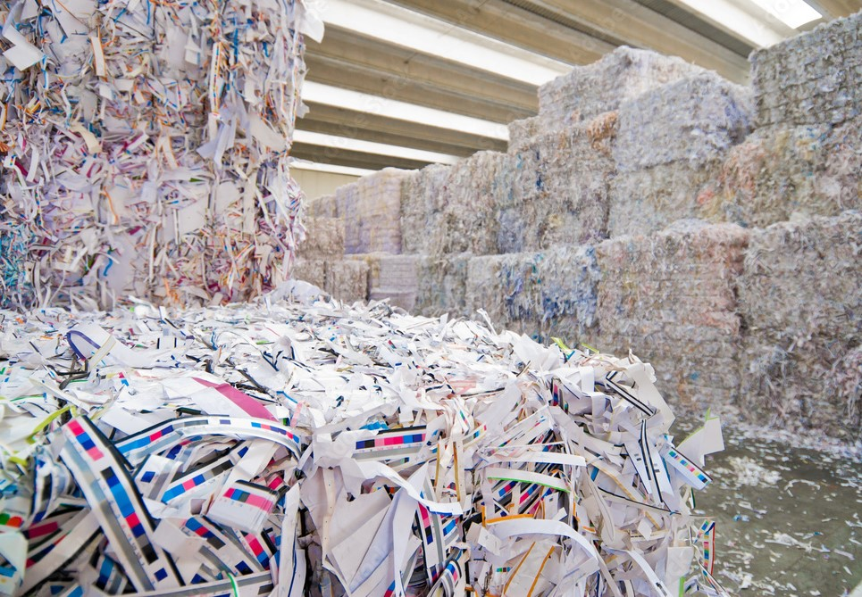
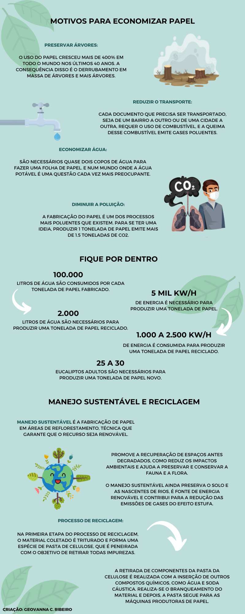

O Brasil é um importante produtor de papel e aparece no 2º lugar do ranking da produção mundial de celulose - de acordo com dados de 2021. Atualmente, a maior parte dos papéis (95%) é feita a partir do tronco de árvores cultivadas. No Brasil o eucalipto é a espécie mais utilizada, por seu rápido crescimento, atingindo em torno de 30 m de altura em 7 anos.
Para a produção de papel, a madeira é processada, formando uma pasta celulósica. Na seqüência ela pode sofrer processo de clareamento, impregnação ou revestimento (com outras substâncias como plástico, parafina, etc). Estes processos são realizados de acordo com o papel que se deseja obter.
Cartões perfurados: Utilizados para a computação de dados;
Branco: Papéis brancos de escritório, manuscritos, impressos, cadernos usados sem capa;
Kraft: Sacos de papel para cimento, sacos de papel de pão;
Jornais;
Cartolina;
Ondulado: Caixa de papelão ondulado;
Revistas;
Misto: Papéis utilizados mistos de escritórios, gráficas, lojas comerciais, residências;
Tipografia: Aparas de gráficas e tipografia.
